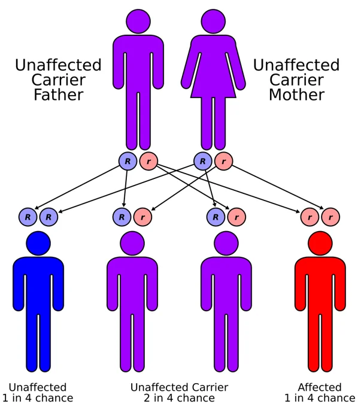

DX.7 — Microcéphalie primitive génétique
Un nourrisson né avec une petite tête, dont le périmètre crânien s’éloigne encore de la moyenne pendant l’enfance, sans autre malformation, oriente vers une microcéphalie primitive génétiqueS7. Le médecin écarte d’abord les causes acquises, comme le cytomégalovirus congénital et l’alcool pendant la grossesse, puis il confie la confirmation au généticien et au neuropédiatreS3S4S7.
Ce cours DX.7 reprend les sources citées ; aucun médecin ne l’a encore validé cliniquement.
1. Définition
La microcéphalie primitive est une microcéphalie congénitale : le périmètre crânien (PC) est inférieur ou égal à −2 déviations standard (DS) pour l’âge et le sexe à la naissanceS7. Ce PC reste ensuite inférieur à −3 DS après l’âge de 6 mois, ce qui distingue la forme primitive d’un simple PC bas transitoireS7.
2. Épidémiologie (Suisse, puis Europe)
En Suisse, pédiatrie suisse recommande depuis le 15 juin 2026 des courbes nationales, qui servent à repérer un PC bas dès la naissanceS2. Les sources suisses lues ne chiffrent pas la microcéphalie primitive ; le protocole national français fournit donc les chiffres européens retenus iciS2S7.
Chiffres européens lus : fréquence et répartition
| Indicateur | Valeur | Population | Source |
|---|---|---|---|
| Incidence des formes ASPM (abnormal spindle-like microcephaly associated), WDR62 (WD repeat domain 62) et CDK5RAP2 | Entre 1/50 000 et 1/150 000 | Protocole national français | S7 |
| Rapport entre les sexes | 1 ; filles et garçons également touchés | Protocole national français | S7 |
| Gène le plus souvent en cause | ASPM, plus de 200 variations rapportées | Revue citée par le protocole | S7 |
| Deuxième gène | WDR62, plus de 66 variations | Revue citée par le protocole | S7 |
| Quatrième gène | CDK5RAP2, après ASPM, WDR62 et le gène de la microcéphaline, plus de 25 variations | Revue citée par le protocole | S7 |
| Patients identifiés en France | Près de 50 avec ASPM, 17 avec WDR62, 7 avec CDK5RAP2 | Séries françaises | S7 |
| Crises épileptiques | Près de 30 % des individus | Série de 2021 citée par le protocole | S7 |
Ces effectifs restent petits ; les pourcentages par gène reposent donc sur quelques dizaines de patients, ce que le lecteur doit garder en têteS7.
Le risque de récurrence atteint 25 % à chaque grossesse pour un couple qui a déjà un enfant atteint, car les deux parents sont porteurs sainsS7. La consanguinité augmente ce risque dans toute maladie récessive ; cette remarque relève d’une déduction, car le protocole ne la chiffre pasS7.
3. Physiopathologie
Les formes liées aux gènes ASPM, WDR62 et CDK5RAP2 se transmettent sur le mode autosomique récessifS7. Ces trois gènes codent des protéines qui contrôlent la division des progéniteurs neuronaux, cellules souches à l’origine de tout le cerveauS7. Leur perte de fonction rend la division anormale, ce qui entraîne une différenciation précoce ou une mort cellulaire, donc un nombre final de neurones réduitS7.
La protéine ASPM se place au pôle du fuseau mitotique et maintient les divisions symétriques prolifératives en orientant ce fuseauS7. Son absence épuise prématurément le réservoir de progéniteurs, si bien que la production de neurones reste insuffisanteS7.
Le tableau des trois gènes compare localisation, fonction et conséquences, tandis que la fenêtre sur le cerveau montre ce qui reste préservéS7.
Trois gènes, une même voie : la division des progéniteurs
| Gène | Chromosome et structure | Fonction de la protéine | Particularité | Source |
|---|---|---|---|---|
| ASPM | 1q31.3, 23 exons | Pôle du fuseau mitotique, orientation du fuseau | Gène le plus fréquent ; variants presque toujours tronquants | S7 |
| WDR62 | 32 exons | Pôles du fuseau, interagit avec ASPM | Plus de variants faux-sens ; malformations corticales | S7 |
| CDK5RAP2 | 9q34, 23 exons | Cohésion du centrosome, matrice péricentriolaire | Atteinte neurosensorielle propre | S7 |
Les premiers loci de microcéphalie ont été localisés en 1999, puis les gènes correspondants identifiés dans les années 2000, selon le protocoleS7.
Ce que la microcéphalie primitive réduit, et ce qu’elle épargne
| Structure ou fonction | Effet | Source |
|---|---|---|
| Volume cérébral et cortical | Réduit jusqu’à 50 % de celui des témoins dans la forme ASPM | S7 |
| Hippocampes | Volume préservé | S7 |
| Mémoire à long terme épisodique | Préservée dans la forme ASPM | S7 |
| Gyration corticale | Presque toujours simplifiée | S7 |
| Croissance staturopondérale | Le plus souvent normale, rattrapage après un retard intra-utérin | S7 |
Cette dissociation explique pourquoi les apprentissages s’appuient sur la mémoire, malgré une déficience intellectuelle souvent présenteS7.
Transmission autosomique récessive : deux parents porteurs sains. Cburnett publie ce schéma en couleurs sous licence CC BY-SA 3.0S9.

Lisez d’abord seul ce schéma : suivez les allèles de chaque parent jusqu’aux quatre enfants possibles.
La copie annotée montre cinq repères, sur les allèles des parents et des enfants.
- 1. Le repère 1 montre les deux allèles du père, l’un normal et l’autre porteur du variantS9.
- 2. Le repère 2 montre les allèles de la mère, porteuse saine du même typeS9.
- 3. Le repère 3 montre l’enfant qui hérite de deux allèles variants, donc atteint, avec une chance sur quatreS9S7.
- 4. Le repère 4 montre l’enfant qui ne reçoit aucun variant, avec une chance sur quatreS9.
- 5. Le repère 5 montre un enfant porteur sain, situation qui concerne deux enfants sur quatreS9.
Ce que l’image décide. Le schéma justifie le conseil génétique : chaque nouvelle grossesse du couple porte un risque de 25 %S7.
4. Démarche diagnostique
La démarche reprend la mesure standardisée du PC décrite en Phase A, puis compare la valeur au seuil de −2 DS à la naissanceS5S6. Un PC sous le 2e centile impose une évaluation pédiatrique, et une chute de deux lignes de centiles impose une imagerie crânienneS5.
Le médecin écarte ensuite les causes acquises graves ou traitables, avant de suspecter une forme génétique isoléeS3S4S7. La séquence diagnostique et le tableau des diagnostics différentiels fixent l’ordre de ces étapesS5S7.
Séquence diagnostique en six étapes
| Étape | Geste | Seuil ou critère | Conduite | Source |
|---|---|---|---|---|
| 1. Mesurer | Trois mesures au ruban de papier | Plus grande valeur, âge corrigé | Courbe nationale suisse | S6S2 |
| 2. Situer | Comparer à la naissance et aux contrôles | Au plus −2 DS à la naissance ; sous −3 DS après 6 mois | Évaluation pédiatrique | S7S5 |
| 3. Exclure le cytomégalovirus | Nouveau-né avec signes évocateurs | PCR (amplification génique) sur urine ou salive dans les 21 premiers jours | Bilan d’extension si positive | S3 |
| 4. Exclure l’alcool | Anamnèse de consommation, visage, croissance | Triade du syndrome d’alcoolisation fœtale | Diagnostic du spectre | S4 |
| 5. Imager | Imagerie par résonance magnétique (IRM) cérébrale | Simplification gyrale, malformation corticale | Systématique dans le bilan | S7 |
| 6. Confirmer | Panel, exome ou génome | Variant bi-allélique pathogène | Conseil génétique | S7 |
Diagnostics différentiels à écarter
| Diagnostic | Indice | Examen qui tranche | Source |
|---|---|---|---|
| Cytomégalovirus congénital (DX.8) | Primo-infection maternelle, signes néonatals | PCR sur urine ou salive avant 21 jours | S3 |
| Troubles du spectre de l’alcoolisation fœtale (DX.9) | Petites fentes palpébrales, philtrum effacé, lèvre supérieure fine, retard de croissance | Diagnostic clinique ; exposition prouvée ou fortement supposée pour les formes partielles | S4 |
| Autre microcéphalie primitive génétique | Tableau proche | Séquençage haut débit | S7 |
| Nanisme microcéphale, syndrome de Seckel | Petite taille marquée | Analyse génétique | S7 |
| Microcéphalies syndromiques : Rett, Cornelia de Lange, Rubinstein-Taybi | Autres signes cliniques reconnaissables | Analyse génétique ciblée ou large | S7 |
| Craniosténose (DX.6) | Forme anormale du crâne | Diagnostic clinique ; voir la Phase A | S5 |
5. Anamnèse ciblée et drapeaux rouges
L’anamnèse reprend la grossesse, les biométries anténatales, la naissance et chaque étape du développement, car le protocole les place en tête du bilanS7. Elle recherche aussi les antécédents familiaux et les fausses couches à répétition, qui orientent vers une cause génétiqueS7.
Le médecin interroge sur l’alcool et sur une infection pendant la grossesse, puisque ces causes acquises imitent une forme génétiqueS3S4. Les drapeaux rouges imposent une consultation rapide, notamment toute régression psychomotrice, ou un PC normal à la naissance qui chute ensuite rapidementS7S5.
Questions ciblées et drapeaux rouges
| Question | Réponse attendue dans la forme primitive | Drapeau rouge | Source |
|---|---|---|---|
| Le PC était-il déjà petit à la naissance ? | Oui, au plus −2 DS, parfois visible au 3e trimestre | PC normal puis chute rapide : cause acquise à rechercher | S7S5 |
| Une consommation d’alcool maternelle pendant la grossesse est-elle rapportée ? | Non | Oui : troubles du spectre de l’alcoolisation fœtale | S4 |
| Y a-t-il eu une infection maternelle ou un contact avec de jeunes enfants ? | Non | Primo-infection à cytomégalovirus | S3 |
| L’enfant a-t-il eu des secousses, des sursauts, des ruptures de contact ? | Parfois | Crises : électroencéphalogramme (EEG) et neuropédiatre | S7 |
| Perd-il des acquisitions ? | Non | Régression : consultation neurologique en urgence | S7 |
| Entend-il, suit-il du regard ? | Oui | Baisse auditive progressive, surtout avec CDK5RAP2 | S7 |
| Comment mange-t-il et dort-il ? | Difficultés alimentaires transitoires, sommeil perturbé | Infléchissement pondéral | S7 |
| Des apparentés ont-ils une petite tête ou une déficience ? | Parfois dans la fratrie | Orientation génétique | S7 |
Les circonstances de découverte varient avec l’âge, de l’échographie du 3e trimestre au bilan d’une déficience chez l’adulteS7.
Circonstances de découverte selon l’âge
| Période | Signe d’appel | Qui l’identifie | Suite | Source |
|---|---|---|---|---|
| Anténatale | Microcéphalie, retard de croissance intra-utérin (RCIU), malformation cérébrale au 3e trimestre, plus rarement au 2e | Gynécologue, échographiste | Analyses génétiques dans quelques centres | S7 |
| Petite enfance | Retard neuromoteur ou de langage, crises, signes neurologiques | Médecin de famille ou pédiatre, puis neuropédiatre | Consultation de neuropédiatrie ou de génétique | S7 |
| Enfance | Cinétique insuffisante de la courbe du PC | Médecin de famille ou pédiatre | Avis du neuropédiatre | S7 |
| Âge adulte, rarement | Déficience intellectuelle avec microcéphalie restée sans cause | Médecin traitant, psychiatre, neurologue | Généticien | S7 |
Évoquer spécifiquement l’un des trois gènes sur une échographie anténatale reste difficilement envisageable, selon le protocoleS7.
6. Examen physique ciblé, région par région
L’examen suit sept régions, chacune dans sa propre fenêtre, car chaque gène laisse une signature différente hors de la têteS7. La croissance, la neurologie, la peau, les yeux, les oreilles et le rachis complètent l’examenS7.
Tête et visage
| Élément | Technique | Interprétation | Source |
|---|---|---|---|
| PC | Trois mesures, courbe corrigée | Au plus −2 DS à la naissance, sous −3 DS après 6 mois | S7S6 |
| Front | Profil | Front fuyant : lobes frontaux peu développés | S7 |
| Visage | Examen morphologique complet, bouche, extrémités | Dysmorphie marquée : microcéphalie syndromique | S7 |
Un front fuyant témoigne de l’insuffisance de développement des lobes frontaux, selon le protocoleS7.
Croissance et état général
| Élément | Technique | Interprétation | Source |
|---|---|---|---|
| Poids et taille | Courbe nationale suisse | Retard intra-utérin puis rattrapage en 2 à 5 ans | S7S2 |
| Tension artérielle | Mesure à la première visite | Valeur anormale : bilan rénal | S7 |
| Cœur | Auscultation | Souffle : évaluation cardiaque | S7 |
Une petite taille persistante fait évoquer un nanisme microcéphale plutôt qu’une microcéphalie primitive isoléeS7.
Neurologie
| Élément | Technique | Interprétation | Source |
|---|---|---|---|
| Tonus | Hypotonie, hypertonie, asymétrie | Syndrome pyramidal, fréquent avec WDR62 | S7 |
| Réflexes | Réflexes ostéotendineux | Vifs : syndrome pyramidal spastique | S7 |
| Coordination et marche | Observation de la marche | Ataxie, rarement | S7 |
| Éveil et langage | Compréhension, vocalises, mots | Retard de langage très fréquent | S7 |
Un syndrome pyramidal ou cérébelleux d’emblée, qui tend à s’améliorer, s’observe souvent dans la forme WDR62S7.
Peau
| Élément | Technique | Interprétation | Source |
|---|---|---|---|
| Pigmentation | Examen cutané complet | Taches hypo- et hyperpigmentées | S7 |
| Fréquence | Selon le gène | Chez les 7 patients CDK5RAP2 ; chez 6 patients ASPM | S7 |
Des taches hypo- et hyperpigmentées orientent vers les formes CDK5RAP2 ou ASPM, sans spécificité suffisante pour poser le diagnosticS7.
Yeux
| Élément | Technique | Interprétation | Source |
|---|---|---|---|
| Fond d’œil | Lampe à fente et fond d’œil | Hypo- ou hyperpigmentation rétinienne | S7 |
| Taille du globe | Inspection | Microphtalmie, notamment avec CDK5RAP2 | S7 |
| Réfraction et strabisme | Examen ophtalmologique | Hypermétropie, myopie, astigmatisme, strabisme | S7 |
Les dépôts rétiniens de la forme CDK5RAP2 n’ont, pour l’instant, aucun retentissement sur l’acuité visuelle des 7 enfants françaisS7.
Oreilles et audition
| Élément | Technique | Interprétation | Source |
|---|---|---|---|
| Audition | Audiométrie, potentiels évoqués auditifs selon l’oto-rhino-laryngologiste (ORL) | Surdité progressive entre 6 et 10 ans avec CDK5RAP2 | S7 |
| Degré | Audiométrie | Perte sévère de 70 à 80 dB chez les patients atteints | S7 |
| Rochers | Scanner des rochers | Partition incomplète de type II de la cochlée | S7 |
Un audiogramme normal au diagnostic n’exclut pas une perte ultérieure ; l’examen se répète donc dans le tempsS7.
Rachis et membres
| Élément | Technique | Interprétation | Source |
|---|---|---|---|
| Rachis | Inspection en flexion | Scoliose ou cyphose | S7 |
| Genoux et chevilles | Amplitudes articulaires | Flessum de genou, équin | S7 |
| Hanches et pieds | Examen orthopédique | Luxation de hanche, malposition des pieds | S7 |
Les complications orthopédiques se surveillent surtout autour de la puberté, quand la croissance s’accélère, particulièrement dans la forme WDR62S7.
Microcéphalie : la voûte réduite face à une tête typique. Les Centers for Disease Control and Prevention (CDC), source non européenne, fournissent ce dessin en couleurs, versé au domaine publicS8.

Lisez d’abord seul ce dessin : comparez le front et la voûte des deux nourrissons.
La copie annotée montre quatre repères, trois chez l’enfant microcéphale et un chez l’enfant de référence.
- 1. Le repère 1 montre le contour pointillé de la tête attendue, que la voûte réelle n’atteint pasS8.
- 2. Le repère 2 montre le front fuyant, que le protocole relie au faible développement des lobes frontauxS8S7.
- 3. Le repère 3 montre l’occiput, plus proche du cou que ne le prévoit le contour attenduS8.
- 4. Le repère 4 montre le front bombé d’un nourrisson au PC typique, qui sert de comparaisonS8.
Ce que l’image décide. Le dessin montre une face de taille normale sous une voûte réduite ; seule la mesure reportée sur la courbe établit toutefois la microcéphalieS6S7.
7. Approche syndromique
Le syndrome de microcéphalie isolée associe un PC bas dès la naissance, une croissance staturopondérale normale et peu de malformations hors du système nerveuxS7. Le syndrome neurologique ajoute un retard de langage, une déficience intellectuelle variable, parfois une épilepsie ou un syndrome pyramidalS7.
Le tableau des signatures par gène distingue les trois formes, car chacune oriente le suivi vers un organe différentS7.
Signatures cliniques des trois gènes
| Trait | ASPM | WDR62 | CDK5RAP2 | Source |
|---|---|---|---|---|
| PC à la naissance | Au plus −2 DS ; repéré au 3e trimestre dans 23 cas sur 47 | Parfois normal, de −0,5 à −3,5 DS | Au plus −2 DS ; repéré avant la naissance dans 5 cas sur 7 | S7 |
| PC à l’âge adulte | Jusqu’à −11 DS | En moyenne −6,5 DS | Jusqu’à −8 DS à l’adolescence | S7 |
| Marche | 60 % avant 18 mois | Âge médian 19 mois ; un peu moins de 20 % ne marchent pas | Avant 18 mois chez les 7 enfants | S7 |
| Langage | 17 % font des phrases à 3 ans | Environ 70 % font des phrases simples | Retard chez tous | S7 |
| Épilepsie | 10 enfants sur 47, soit 21 %, jamais avant 6 mois | Environ 40 %, souvent bi- ou trithérapie | Aucune crise chez les 7 enfants | S7 |
| Imagerie | Gyration simplifiée, malformations rares | Pachygyrie et gyration simplifiée dans 75 % ; malformations sévères dans 25 % | Gyration simplifiée, adhésion interhypothalamique constante | S7 |
| Atout cognitif | Mémoire à long terme préservée | Autonomie et socialisation préservées | Compréhension verbale ou raisonnement visuo-spatial préservés | S7 |
| Signe propre | Hyperkinésie chez un tiers dès 5 ans | Malformations corticales chez 70 % | Surdité progressive, dépôts rétiniens | S7 |
Les troubles associés touchent le sommeil, le comportement et la régulation émotionnelle, et ils pèsent souvent plus que la microcéphalie sur la vie familialeS7.
Troubles associés : reconnaître et orienter
| Trouble | Expression | Première conduite | Source |
|---|---|---|---|
| Sommeil | Difficultés d’endormissement, réveils fréquents | Chercher une cause organique, des crises nocturnes ; mélatonine possible | S7 |
| Comportement | Impulsivité, désinhibition, agitation | Écarter une douleur, puis neuropédiatre et pédopsychiatre | S7 |
| Régulation émotionnelle | Colères, larmes, agressivité, repli | Repérer les déclencheurs ; éducateur ou psychologue spécialisé | S7 |
| Attention et fonctions exécutives | Difficultés d’initiation, de planification, d’autocontrôle | Bilan neuropsychologique ciblé | S7 |
| Alimentation | Difficultés les deux premières années | Enrichissement simple de l’alimentation | S7 |
Les méthodes conçues pour le trouble du spectre de l’autisme conviennent aussi à ces enfants, selon le protocoleS7.
8. Diagnostic positif et critères
Le diagnostic clinique repose sur un PC au plus à −2 DS dès la naissance, qui se creuse ensuite et reste sous −3 DS après 6 moisS7. Le diagnostic de certitude exige l’identification d’un variant pathogène homozygote ou hétérozygote composite dans ASPM, WDR62 ou CDK5RAP2S7.
Les critères de diagnostic réunissent clinique, imagerie et génétique, tandis que l’interprétation des variants reste confiée au centre de référenceS7.
Critères cliniques, d’imagerie et moléculaires
| Domaine | Critère | Remarque | Source |
|---|---|---|---|
| PC | Au plus −2 DS à la naissance, sous −3 DS après 6 mois | Constant après 6 mois, sauf rares WDR62 à PC de naissance normal | S7 |
| Évolution | Majoration progressive jusqu’à −5 à −11 DS à l’âge adulte | Défaut relatif de croissance du cerveau | S7 |
| Croissance | Retard intra-utérin possible, rattrapage ensuite | Croissance normale après 5 ans pour CDK5RAP2 | S7 |
| Imagerie | IRM : simplification gyrale dans 80 %, ventricules modérément dilatés, corps calleux court | Malformation corticale moins fréquente | S7 |
| Génétique | Variant bi-allélique pathogène | Ponctuel ou grande délétion | S7 |
| Exclusion | Pas de cause acquise ni de syndrome reconnaissable | Cytomégalovirus et alcool écartés | S3S4S7 |
Variants : ce que le généticien interprète
| Type de variant | Conséquence | Interprétation | Source |
|---|---|---|---|
| Non-sens, décalage du cadre de lecture, site d’épissage | Protéine tronquée, perte de fonction | Pathogène le plus souvent | S7 |
| Faux-sens | Effet fonctionnel incertain | Discussion au centre de référence ; plus fréquent dans WDR62 | S7 |
| Grande délétion bi-allélique | Perte de la séquence du gène | Rare | S7 |
ASPM ne compte que 2 variants faux-sens parmi 206 variations décrites, ce qui rend toute nouvelle variation faux-sens difficile à classerS7.
9. Examens complémentaires
L’IRM cérébrale reste systématique, car elle montre la simplification gyrale et recherche une malformation du développement corticalS7. Le séquençage haut débit d’un panel, de l’exome ou du génome constitue aujourd’hui la stratégie privilégiée, même lorsque la présomption clinique est forteS7.
Le tableau des examens précise indication, seuil et conduite pour chaque examen, du sang au bilan sensorielS7S3.
Examens ciblés : indication, résultat, interprétation, conduite
| Examen | Indication | Résultat attendu | Interprétation | Conduite | Source |
|---|---|---|---|---|---|
| PCR du cytomégalovirus sur urine ou salive | Nouveau-né avec signes évocateurs | Négative dans la forme génétique | Positive avant 21 jours : infection congénitale | Bilan d’extension et discussion du traitement | S3 |
| IRM cérébrale | Systématique | Gyration simplifiée, corps calleux court | Malformation corticale : risque d’épilepsie | Neuropédiatre | S7 |
| Séquençage haut débit, sang sur tube anticoagulé | Suspicion clinique | Variant bi-allélique pathogène | Diagnostic confirmé | Conseil génétique, tests parentaux | S7 |
| Séquençage Sanger ciblé | Présomption très forte | Variant dans un seul gène | Méthode devenue exceptionnelle | Remplacée par le haut débit | S7 |
| EEG | Doute sur des crises : sursauts, ruptures de contact, chutes | Normal ou anomalies épileptiques | Épilepsie confirmée | Traitement par le neuropédiatre | S7 |
| Audiométrie avec ou sans potentiels évoqués auditifs | Toute microcéphalie primitive, surtout si retard de langage | Normale au départ | Perte de 70 à 80 dB dans les formes CDK5RAP2 atteintes | Répéter dans le temps | S7 |
| Examen ophtalmologique, tomographie par cohérence optique (OCT) si besoin | Au bilan initial | Fond d’œil normal ou dépôts | Microphtalmie, pigmentation rétinienne | Suivi annuel | S7 |
| Bilan neuropsychologique, échelles de Wechsler | Selon l’âge | Profil cognitif | Points forts et faiblesses | Orientation scolaire et rééducations | S7 |
Le prélèvement peut aussi porter sur une biopsie de trophoblaste, du liquide amniotique, un frottis buccal ou une biopsie cutanée, selon le protocoleS7.
La grille de sévérité intellectuelle aide à lire les résultats du bilan neuropsychologique, qu’il faut compléter par une évaluation du fonctionnement adaptatifS7.
Grille de sévérité du trouble du développement intellectuel
Le bilan de la première visite rassemble les éléments que le protocole demande d’interroger et d’examiner, avant tout examen complémentaireS7.
Bilan de la première visite : liste de contrôle
| Volet | Éléments à recueillir | Source |
|---|---|---|
| Famille | Antécédents familiaux, fausses couches à répétition | S7 |
| Grossesse | Biométries cérébrales, liquide amniotique, analyses prénatales | S7 |
| Naissance | Biométries, score d’Apgar, tonus, alimentation | S7 |
| Développement | Tenue de tête, station assise, marche, propreté, régression éventuelle | S7 |
| Langage | Vocalises, syllabes, mots, associations, communication non verbale | S7 |
| Crises | Type, durée, déficit post-critique, traitement | S7 |
| Alimentation et sommeil | Succion, déglutition, reflux, mastication ; qualité et quantité du sommeil | S7 |
| Dents | Pousse, émail, bruxisme, brossage | S7 |
| Examen | Croissance, PC, tension artérielle, neurologie, orthopédie, peau, morphologie, cœur | S7 |
10. Arbre décisionnel
L’arbre part d’un PC bas et sépare d’abord les causes acquises, puis les formes syndromiques, enfin les formes primitives isoléesS5S7. L’arbre détaillé résume chaque branche avec son critère d’entrée, sa conduite et le spécialiste à solliciterS3S4S7.
- Le médecin confirme le PC bas par trois mesures et le situe sur la courbe corrigéeS6.
- Il recherche chez le nouveau-né le cytomégalovirus par PCR avant 21 jours lorsque des signes l’évoquentS3.
- Il recherche une exposition à l’alcool et les signes faciaux du syndrome d’alcoolisation fœtaleS4.
- Il adresse l’enfant au neuropédiatre ou au généticien, qui demande l’IRM et le séquençageS7.
- Il annonce le diagnostic confirmé lors d’une consultation dédiée, puis il organise le conseil génétiqueS7.
Arbre décisionnel détaillé
| Situation | Question | Si oui | Si non | Source |
|---|---|---|---|---|
| PC sous le 2e centile | Signes d’une cause acquise ? | Bilan ciblé : infection, alcool | Étape suivante | S5S3S4 |
| Pas de cause acquise | Dysmorphie marquée et retard de développement ? | Orientation pédiatrique urgente, recherche d’un syndrome | Étape suivante | S5S7 |
| Microcéphalie isolée congénitale | PC au plus −2 DS dès la naissance ? | Suspicion de forme primitive : IRM et séquençage | PC normal puis chute : cause acquise à rechercher | S7 |
| Séquençage | Variant bi-allélique pathogène ? | Diagnostic confirmé, conseil génétique | Discussion au centre de référence | S7 |
| Diagnostic confirmé | Crises, surdité, troubles orthopédiques ? | Prise en charge ciblée | Surveillance programmée | S7 |
11. Prise en charge selon les recommandations suisses
11.A — But. Aucun traitement curatif n’existe ; la prise en charge vise donc à prévenir les complications et à soutenir le développement, la communication et l’autonomieS7. Elle vise aussi à informer le couple d’un risque de récurrence de 25 % et des options de diagnostic prénatalS7.
11.B — Moyens. Le neuropédiatre traite l’épilepsie selon le type de crises ; le tableau antiépileptique détaille molécule, dose AIPS (information professionnelle suisse), durée, contrôle et échecS7AIPS 55297. Les fiches de l’lévétiracétam, du midazolam buccal, du valproate, de la lamotrigine et de la mélatonine recopient les rubriques de l’AIPSAIPS 55297AIPS 62556AIPS 43225AIPS 52853AIPS 67422.
Les rééducations commencent tôt, car la communication et la motricité progressent avec une prise en charge précoce et régulièreS7. Le conseil génétique complète l’annonce, qui se fait lors d’une consultation dédiée, si possible avec un psychologueS7.
Épilepsie : traitement structuré
| Molécule | Situation | Dose selon l’AIPS | Durée et paliers | Contrôle | Critère d’échec | Source |
|---|---|---|---|---|---|---|
| Lévétiracétam, Keppra® solution buvable | Crises focales, en association, dès 1 mois | De 1 à moins de 6 mois : 7 mg/kg deux fois par jour, jusqu’à 21 mg/kg deux fois par jour ; dès 6 mois sous 40 kg : 10 mg/kg deux fois par jour, jusqu’à 30 mg/kg deux fois par jourAIPS 55297 | Paliers toutes les 2 semaines ; plus petite dose efficace | Fréquence des crises, tolérance | Crises persistantes à la dose maximale | AIPS 55297S7 |
| Valproate, Orfiril® solution buvable | Formes généralisées ; utilisé dans la forme WDR62 | 25 mg/kg par jour chez le nouveau-né et l’enfant ; début à 10 à 15 mg/kg par jourAIPS 43225 | Paliers tous les deux à trois jours ; pleine efficacité parfois après 4 à 6 semaines | Réponse clinique, dosage plasmatique si besoin, fonction hépatique | Crises non contrôlées ou effets indésirables | AIPS 43225S7 |
| Lamotrigine, Lamictal® | En association dès 2 ans ; utilisée dans la forme WDR62 | Avec valproate, de 2 à 12 ans : 0,15 mg/kg une fois par jour, puis entretien de 1 à 5 mg/kg par jour, au maximum 200 mg par jourAIPS 52853 | Semaines 1 et 2, puis 3 et 4, puis paliers toutes les 1 à 2 semaines | Peau, poids corporel | Éruption cutanée : avis immédiat | AIPS 52853S7 |
| Midazolam buccal, Buccolam® | Crise prolongée à domicile, épilepsie diagnostiquée | 2,5 mg de plus de 6 mois à moins de 1 an ; 5 mg de 1 à moins de 5 ans ; 7,5 mg de 5 à moins de 10 ans ; 10 mg dès 10 ansAIPS 62556 | Dose unique par les soignants | Arrêt de la crise | Crise au-delà de 10 minutes : médecin d’urgence | AIPS 62556 |
| Topiramate | Rapporté dans la forme ASPM | Non priorisé ; ce cours ne donne pas de dose | — | Cognition | Effets cognitifs délétères | S7 |
Le protocole ne recommande aucune molécule particulière, car le choix dépend du type de crises et non de la microcéphalie elle-mêmeS7. L’épilepsie de la forme ASPM répond généralement à une monothérapie, tandis que la forme WDR62 exige souvent une bi- ou une trithérapieS7.
Lévétiracétam — Keppra®, n° Swissmedic 55297, information d’avril 2023
| Indication | En association dans les crises focales avec ou sans généralisation secondaire, chez le nourrisson né à terme dès 1 moisAIPS 55297. |
|---|---|
| Dose | Dès 6 mois sous 40 kg : 10 mg/kg deux fois par jour, augmentés par paliers jusqu’à 30 mg/kg deux fois par jourAIPS 55297. |
| Forme | Le traitement du nourrisson commence avec la solution buvable à 100 mg/mlAIPS 55297. |
| Contre-indications | « Hypersensibilité au lévétiracétam ainsi qu'aux substances de structure apparentée, ou à l'un des excipients »AIPS 55297. |
| Grossesse | « Les femmes en âge de procréer doivent être conseillées par un spécialiste » ; « un arrêt soudain de lévétiracétam doit être évité car cela peut provoquer des crises de sevrage et de mal épileptique »AIPS 55297. |
| Allaitement | « Le lévétiracétam est excrété dans le lait maternel » ; « C'est pourquoi l'allaitement est déconseillé »AIPS 55297. |
| Mise à jour | Information professionnelle d’avril 2023AIPS 55297. |
Midazolam buccal — Buccolam®, n° Swissmedic 62556, information de décembre 2024
| Indication | Traitement d’urgence des crises convulsives aiguës prolongées dès 6 mois, administré par les parents seulement si une épilepsie est diagnostiquéeAIPS 62556. |
|---|---|
| Dose | Une seule dose : 2,5 mg avant 1 an, 5 mg de 1 à moins de 5 ans, 7,5 mg de 5 à moins de 10 ans, 10 mg dès 10 ansAIPS 62556. |
| Échec | Si la crise n’a pas cessé 10 minutes après l’administration, les soignants appellent immédiatement le médecin d’urgenceAIPS 62556. |
| Contre-indications | « Hypersensibilité au principe actif, aux benzodiazépines ou à l'un des excipients » ; « Myasthénie grave » ; « Insuffisance respiratoire sévère » ; « Syndrome d'apnée du sommeil » ; « Insuffisance hépatique sévère »AIPS 62556. |
| Grossesse | « Les données sont insuffisantes pour évaluer l'innocuité du midazolam pendant la grossesse » ; « Le midazolam ne peut être administré pendant la grossesse sauf en cas de nécessité absolue »AIPS 62556. |
| Allaitement | « L'allaitement ne doit donc pas être nécessairement arrêté après l'administration d'une dose unique de midazolam »AIPS 62556. |
| Mise à jour | Information professionnelle de décembre 2024AIPS 62556. |
Valproate — Orfiril® solution buvable, n° Swissmedic 43225, information de septembre 2025
| Indication | Formes généralisées d’épilepsie primaire en monothérapie, et en association notamment dans le syndrome de West et le syndrome de Lennox-GastautAIPS 43225. |
|---|---|
| Dose | Dose moyenne efficace de 25 mg/kg par jour chez le nouveau-né et l’enfant, atteinte en une semaine environ à partir de 10 à 15 mg/kg par jourAIPS 43225. |
| Précaution pédiatrique | L’AIPS signale un risque particulier d’atteinte hépatique sévère chez le nourrisson et le jeune enfant, surtout avant 3 ansAIPS 43225. |
| Contre-indications | « Chez les femmes enceintes, sauf si aucune alternative thérapeutique ne rentre en ligne de compte et après avoir informé la patiente de manière détaillée sur les risques encourus » ; « Chez les jeunes filles et les femmes en âge de procréer, sauf si toutes les conditions du programme de prévention de la grossesse sont remplies » ; « Hépatite aiguë ou chronique » ; « Antécédents personnels ou dans l’anamnèse familiale d’hépatites sévères, médicamenteuses notamment. » ; « Pancréatite » ; « Hypersensibilité connue au valproate de sodium ou à d’autres composants du médicament. » ; « Porphyrie hépatique. » ; « Patients connus pour avoir des maladies mitochondriales causées par des mutations du gène nucléaire codant pour l’enzyme mitochondriale polymérase gamma (POLG, p. ex. lors du syndrome d’Alpers-Huttenlocher) ainsi que chez les enfants de moins de 2 ans qui sont suspectés d’avoir une maladie liée au gène POLG » ; « Patients souffrant de troubles connus du cycle de l’urée » ; « Patients présentant une déficience systémique primaire en carnitine sans correction de ce déficit »AIPS 43225. |
| Avant le valproate | « En cas de suspicion d’un déficit enzymatique touchant le cycle de l’urée, des explorations métaboliques doivent être effectuées avant le traitement en raison du risque de survenue d’une hyperammoniémie sous valproate »AIPS 43225. |
| Grossesse | « Le valproate est contre-indiqué pendant la grossesse, sauf si aucune alternative thérapeutique ne rentre en ligne de compte et après information détaillée de la patiente sur les risques encourus »AIPS 43225. |
| Allaitement | « Le médicament peut entraîner des effets pharmacologiques chez le nourrisson » ; l’AIPS recommande de cesser d’allaiterAIPS 43225. |
| Jeunes filles | Le valproate ne s’utilise chez les jeunes filles qu’en cas d’échec ou d’intolérance de toutes les alternatives, selon le programme de prévention des grossessesAIPS 43225. |
| Mise à jour | Information professionnelle de septembre 2025AIPS 43225. |
Chez un enfant microcéphale sans diagnostic moléculaire, le médecin écarte donc avant le valproate une maladie liée à POLG et un trouble du cycle de l’uréeAIPS 43225. Par déduction des contre-indications, le médecin demande pour cela une ammoniémie, un lactate et une analyse génétiqueAIPS 43225.
Lamotrigine — Lamictal®, n° Swissmedic 52853, information de mars 2026
| Indication | De 2 à 12 ans, en association pour les crises partielles et les crises tonico-cloniques d’emblée généralisées ; pas en monothérapie initiale chez l’enfantAIPS 52853. |
|---|---|
| Dose avec valproate | 0,15 mg/kg une fois par jour les semaines 1 et 2, puis 0,3 mg/kg les semaines 3 et 4 ; entretien de 1 à 5 mg/kg par jourAIPS 52853. |
| Seuil de prise | Si la dose calculée reste inférieure à 1 mg chez un patient sous valproate, l’AIPS interdit l’administration de LamictalAIPS 52853. |
| Contre-indications | « Hypersensibilité connue à la lamotrigine ou à l'un des autres composants du produit » ; « Insuffisance rénale sévère »AIPS 52853. |
| Grossesse | « Lamictal ne doit pas être utilisé pendant la grossesse, sauf en cas de nécessité absolue »AIPS 52853. |
| Allaitement | « Le bénéfice potentiel de l'allaitement doit être mis en balance avec le risque possible de survenue d'effets indésirables chez le nourrisson »AIPS 52853. |
| Mise à jour | Information professionnelle de mars 2026AIPS 52853. |
Mélatonine — Slenyto®, n° Swissmedic 67422, information de juin 2025
| Indication | Insomnie de 2 à 18 ans avec trouble du spectre de l’autisme ou troubles neurogénétiques avec sécrétion diurne atypique de mélatonine ou réveils nocturnes, après échec de l’hygiène du sommeilAIPS 67422. |
|---|---|
| Situation du cours | Le protocole propose la mélatonine contre les troubles d’endormissement ; la microcéphalie primitive n’est pas nommée dans l’indicationS7AIPS 67422. |
| Dose | Dose initiale de 2 mg, portée à 5 mg si la réponse reste insuffisante, au maximum 10 mgAIPS 67422. |
| Contrôle | Réévaluation au moins tous les 6 mois ; données disponibles jusqu’à 2 ans de traitementAIPS 67422. |
| Contre-indications | Hypersensibilité au principe actif ou à l’un des composantsAIPS 67422. |
| Grossesse | « Par mesure de précaution, il est préférable d’éviter l’utilisation de la mélatonine pendant la grossesse »AIPS 67422. |
| Allaitement | « L’effet de la mélatonine sur les nouveau-nés/nourrissons n’est pas connu » ; « Il convient de décider soit d’interrompre l’allaitement, soit de renoncer au traitement par la mélatonine ou d’interrompre ce traitement »AIPS 67422. |
| Mise à jour | Information professionnelle de juin 2025AIPS 67422. |
Rééducations et soutiens : indication, rythme, objectif
| Domaine | Moyen | Rythme indicatif | Objectif | Source |
|---|---|---|---|---|
| Langage et communication | Orthophonie précoce, gestes, pictogrammes, tablette | Hebdomadaire selon les besoins | Réduire l’écart entre compréhension et expression | S7 |
| Motricité | Kinésithérapie et psychomotricité | Hebdomadaire selon les besoins | Station assise, marche, motricité fine | S7 |
| Autonomie | Ergothérapie dès 8 à 9 ans | Selon les besoins | Gestes quotidiens, graphisme | S7 |
| Comportement | Pédopsychiatre, thérapie comportementale | Selon les besoins | Frustration, agitation, anxiété | S7 |
| Spasticité | Baclofène ou gabapentine, attelles, toxine botulique ; dose selon l’AIPS du produit choisi | Selon l’orthopédiste et le neuropédiatre | Limiter les rétractions | S7 |
| Alimentation | Enrichissement ; sonde nasogastrique rarement | Petite enfance | Rattraper un infléchissement pondéral | S7 |
| Reflux | Règles hygiéno-diététiques, inhibiteurs de la pompe à protons | Selon les symptômes | Comme chez tout enfant | S7 |
Devant un changement récent du comportement, le médecin cherche d’abord une douleur ou une cause organique, puisque l’enfant l’exprime mal par la paroleS7.
Conseil génétique et diagnostic prénatal
| Option | Moment | Condition | Source |
|---|---|---|---|
| Biopsie de trophoblaste | Dès 12 semaines d’aménorrhée | Variants du cas index identifiés | S7 |
| Amniocentèse | Dès 15 semaines d’aménorrhée | Variants du cas index identifiés | S7 |
| Diagnostic préimplantatoire | Avant la grossesse | Variant pathogène identifié chez les deux parents | S7 |
| Don de gamètes | Avant la grossesse | Discuté avec le couple | S7 |
Le prélèvement prénatal part au laboratoire qui a analysé le cas index, et son résultat indique si le fœtus porte ou non la variationS7.
11.C — Surveillance. Le médecin de famille ou le pédiatre voit l’enfant au moins une fois par an, et le neuropédiatre ou le généticien deux fois par anS7. La surveillance datée précise pour chaque spécialiste le rythme et le seuil d’alerteS7.
Surveillance datée par spécialiste
| Intervenant | Ce qu’il contrôle | Rythme | Seuil d’alerte et conduite | Source |
|---|---|---|---|---|
| Médecin de famille ou pédiatre | Croissance, vaccins, nutrition, comportement | Deux fois par an ; au minimum une fois par an | Régression : consultation neurologique en urgence | S7 |
| Neuropédiatre | Épilepsie, développement | Une fois par mois à une fois tous les 6 mois selon l’épilepsie | Crise nouvelle ou prolongée | S7 |
| Généticien | Diagnostic, conseil génétique | Une fois tous les 2 ans | Nouvelle grossesse du couple | S7 |
| Ophtalmologue | Réfraction, rétine ; potentiels évoqués visuels et OCT si CDK5RAP2 | Une fois par an ; acuité tous les 2 ans | Baisse visuelle | S7 |
| ORL | Audiogramme | Une à deux fois par an avant 10 ans, puis tous les 2 ans | Perte progressive : appareillage ou implant cochléaire | S7 |
| Orthopédiste | Scoliose, cyphose, équin, hanches | Une fois par an si troubles ; rapproché à l’adolescence | Déformation évolutive : corset, attelles, chirurgie | S7 |
| Dentiste | Soins bucco-dentaires | Une fois par an | Caries, bruxisme | S7 |
11.D — Pronostic. Le pronostic dépend du gène : développement moteur relativement préservé avec ASPM, déficience plus marquée et épilepsie plus résistante avec WDR62S7. La déficience intellectuelle reste le plus souvent légère à modérée, mais elle laisse des capacités d’apprentissage en lecture, écriture ou numérationS7.
Le tableau pronostique résume l’évolution attendue par domaine, du langage à l’auditionS7.
Pronostic par domaine
| Domaine | Évolution attendue | Source |
|---|---|---|
| PC | Écart croissant avec l’âge, jusqu’à −5 à −11 DS à l’âge adulte | S7 |
| Marche | Entre l’âge normal et 40 mois ; 2 patients WDR62 sur 17 ne marchent pas | S7 |
| Langage | Décalage d’au moins 2 ans dans les acquisitions | S7 |
| Épilepsie | Le plus souvent jugulée avec ASPM ; plus difficile avec WDR62 | S7 |
| Audition | Perte progressive chez 1 enfant sur 2 dans la première décennie avec CDK5RAP2 | S7 |
| Socialisation | Enfants sociables et communicatifs, malgré les difficultés de langage | S7 |
| Difficultés alimentaires | Corrigées spontanément au cours des deux premières années | S7 |
L’annonce du diagnostic et l’éducation thérapeutique engagent la famille dans un suivi qui durera toute la vieS7.
Annonce du diagnostic : comment la conduire
| Élément | Contenu | Source |
|---|---|---|
| Cadre | Consultation dédiée, par le médecin qui a évoqué le diagnostic ou prescrit l’analyse | S7 |
| Présence | Psychologue souhaitable pendant ou après l’entretien | S7 |
| Message | Caractéristiques de la maladie, prise en charge, suivi, risque d’épilepsie | S7 |
| Génétique | Mode de transmission, conseil génétique, diagnostic prénatal | S7 |
| Écrit | Compte rendu adressé aux médecins impliqués et aux parents | S7 |
| Reprise | Nouvel entretien quelques semaines plus tard | S7 |
Éducation thérapeutique : ce que la famille apprend
| Thème | Objectif | Source |
|---|---|---|
| Compréhension de la maladie | Mesurer ses implications dans la vie quotidienne | S7 |
| Comportement et relations | Rééducations, aide éducative, groupes de parole parentaux | S7 |
| Épilepsie | Mettre l’enfant en sécurité, administrer le traitement d’urgence, éviter les gestes nocifs | S7AIPS 62556 |
| Soins corporels | Hygiène bucco-dentaire et soins habituels | S7 |
Les associations de familles informent et soutiennent les proches, même si aucune ne représente spécifiquement la microcéphalie primitive en FranceS7.
12. Prévention
Aucune mesure ne prévient la survenue d’une microcéphalie primitive chez un premier enfant, puisque les parents porteurs sains ignorent en général leur statut ; cette remarque relève d’une déductionS7. La prévention vise donc la récurrence dans la famille et les complications chez l’enfant atteintS7.
Prévention de la récurrence et des complications
| Mesure | But | Source |
|---|---|---|
| Conseil génétique après confirmation moléculaire | Informer d’un risque de 25 % à chaque grossesse | S7 |
| Diagnostic prénatal ou préimplantatoire | Éviter la récurrence si le couple le souhaite | S7 |
| Mesure du PC à chaque contrôle et report sur la courbe | Repérer tôt l’enfant à orienter | S7S2 |
| Éducation des parents à la sécurité en cas de crise | Administrer le traitement d’urgence d’une crise prolongée | S7AIPS 62556 |
| Hygiène bucco-dentaire et suivi dentaire | Prévenir les complications dentaires | S7 |
| Audiogrammes répétés | Dépister une perte auditive progressive | S7 |
Les mesures de prévention secondaire reposent sur l’éducation thérapeutique, que le protocole décrit comme une part de l’activité de soinsS7.
13. Points clés
- La microcéphalie primitive associe un PC au plus à −2 DS à la naissance, puis sous −3 DS après 6 moisS7.
- Les formes ASPM, WDR62 et CDK5RAP2 sont autosomiques récessives, avec un risque de récurrence de 25 %S7.
- Le médecin écarte d’abord le cytomégalovirus par PCR avant 21 jours et l’exposition à l’alcoolS3S4.
- L’IRM cérébrale est systématique, puis le séquençage haut débit d’un panel ou de l’exome confirme le diagnosticS7.
- WDR62 entraîne malformations corticales et épilepsie difficile, tandis que CDK5RAP2 entraîne surdité progressive et dépôts rétiniensS7.
- Aucun traitement curatif n’existe ; l’épilepsie se traite selon le type de crises, avec les doses de l’AIPSS7AIPS 55297.
- Le suivi reste pluridisciplinaire toute la vie, avec un audiogramme et un examen ophtalmologique réguliersS7.
14. Pièges et questions fréquentes à l’examen fédéral suisse
Les pièges portent sur les causes acquises qui imitent une forme génétique ; la banque de questions justifie chaque réponse par le point du cours concerné.
Pièges et questions d’examen
| Question | Réponse | Raison | Source |
|---|---|---|---|
| Quel seuil de PC définit la microcéphalie primitive après 6 mois ? | Inférieur à −3 DS. | À la naissance, le seuil est au plus −2 DS (point 1). | S7 |
| Quel est le risque de récurrence pour le couple ? | 25 % à chaque grossesse. | La transmission est autosomique récessive (point 3). | S7 |
| Faut-il écarter le cytomégalovirus chez le nouveau-né microcéphale ? | Oui, avant 21 jours. | La PCR sur urine ou salive n’est fiable que dans ce délai (point 9). | S3 |
| Quel gène s’accompagne d’une surdité progressive ? | CDK5RAP2. | La perte apparaît entre 6 et 10 ans chez 4 patients français sur 7 (point 6). | S7 |
| Quelle forme expose le plus aux malformations corticales ? | WDR62. | Elles touchent 70 % des patients et causent l’épilepsie (point 7). | S7 |
| Le valproate est-il anodin chez une adolescente ? | Non. | L’AIPS le réserve à l’échec de toutes les alternatives chez les jeunes filles (point 11). | AIPS 43225 |
| Faut-il un audiogramme si le langage est en retard ? | Oui. | Le protocole recommande un audiogramme initial pour toute microcéphalie primitive (point 9). | S7 |
| Que faire devant une régression psychomotrice ? | Consultation neurologique en urgence. | La régression n’appartient pas à l’évolution attendue (point 5). | S7 |
| L’IRM cérébrale est-elle facultative ? | Non. | Le protocole la juge systématique, car elle montre gyration simplifiée ou malformation corticale (point 9). | S7 |
| Quel atout cognitif caractérise la forme ASPM ? | La mémoire à long terme. | Elle reste préservée et sert de socle aux apprentissages (point 3). | S7 |
Sources
Toutes les sources ont été consultées le 13.11.2026. Les sources suisses précèdent les sources européennes.
- [S1] CIMS/SMIFK. PROFILES 2023 — Situations as Starting Points, SSP S1.13 (micro- and macrocephaly). https://www.smifk-cims.ch/profiles-2023/ssps
- [S2] pédiatrie suisse. Courbes de croissance : nouvelles courbes nationales recommandées à compter du 15 juin 2026. https://www.paediatrieschweiz.ch/fr/documents/courbes-de-croissance
- [S3] Baud D, L’Huillier AG. CMV congénital : le paradoxe d’une infection fréquente et méconnue. Paediatrica, 30 juin 2026. https://www.paediatrieschweiz.ch/fr/cmv-congenital-le-paradoxe-dune-infection-frequente-et-meconnue
- [S4] Maitre G, Fischer Fumeaux CJ, Truttmann A. Le syndrome foeto-alcoolique. Paediatrica, 13 janvier 2020. https://www.paediatrieschweiz.ch/fr/le-syndrome-foeto-alcoolique
- [S5] National Institute for Health and Care Excellence (NICE). NG127 — Suspected neurological conditions: recognition and referral, section 1.22, 2019, mise à jour 02.10.2023 (Royaume-Uni). https://www.nice.org.uk/guidance/NG127/chapter/recommendations-for-children-aged-under-16
- [S6] National Institute for Health and Care Excellence (NICE). QS198 — Quality statement 2: head size and shape in children, 08.01.2021 (Royaume-Uni). https://www.nice.org.uk/guidance/qs198/chapter/quality-statement-2-head-size-and-shape-in-children
- [S7] Centres de référence Anomalies du développement, filière AnDDI-Rares. Protocole national de diagnostic et de soins : microcéphalies primitives ASPM, WDR62 et CDK5RAP2, décembre 2021 (France). https://www.has-sante.fr/upload/docs/application/pdf/2022-01/pnds_pm_microcephalies_primitives_texte_2021-12-31.pdf
- [S8] Centers for Disease Control and Prevention (CDC). Microcephaly comparison, domaine public (source non européenne, États-Unis). https://commons.wikimedia.org/wiki/File:Microcephaly-comparison-500px.jpg
- [S9] Cburnett. Autosomal recessive inheritance (Autorecessive.svg), Wikimedia Commons, CC BY-SA 3.0. https://commons.wikimedia.org/wiki/File:Autorecessive.svg
- [AIPS 55297] Swissmedic, information professionnelle : Keppra® comprimés pelliculés/solution buvable, n° d’autorisation 55297, 57489, mise à jour avril 2023. https://files.refdata.ch/simis-public-prod/MedicinalDocuments/fe18274d32ca43eb8fb58f6d6c1d6139-fr.html
- [AIPS 62556] Swissmedic, information professionnelle : Buccolam, solution buccale, Neuraxpharm Switzerland AG, n° d’autorisation 62556, mise à jour décembre 2024. https://files.refdata.ch/simis-public-prod/MedicinalDocuments/c356bbe5abe34ee1b50ad2211c8d9d72-fr.html
- [AIPS 43225] Swissmedic, information professionnelle : Orfiril® solution buvable, Desitin Pharma GmbH, n° d’autorisation 43225, mise à jour septembre 2025. https://files.refdata.ch/simis-public-prod/MedicinalDocuments/8e83164d4e084d67b3e0f55b1beacf04-fr.html
- [AIPS 52853] Swissmedic, information professionnelle : Lamictal, comprimés à croquer/comprimés dispersibles, n° d’autorisation 52853, mise à jour mars 2026. https://files.refdata.ch/simis-public-prod/MedicinalDocuments/303afb7dc7104fe8b3bb948f2537b2c7-fr.html
- [AIPS 67422] Swissmedic, information professionnelle : Slenyto®, comprimés à libération prolongée, n° d’autorisation 67422, mise à jour juin 2025. https://files.refdata.ch/simis-public-prod/MedicinalDocuments/b0167694f4ae4d71b39c80d6fae88fc9-fr.html